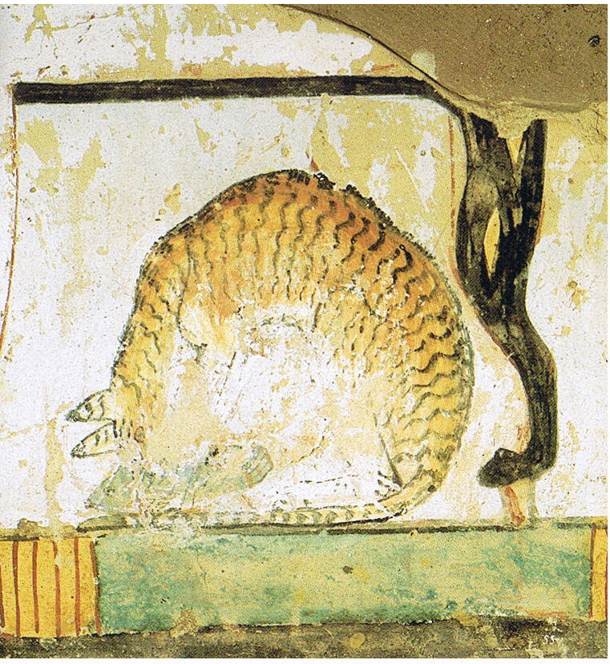
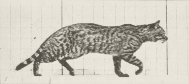
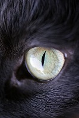
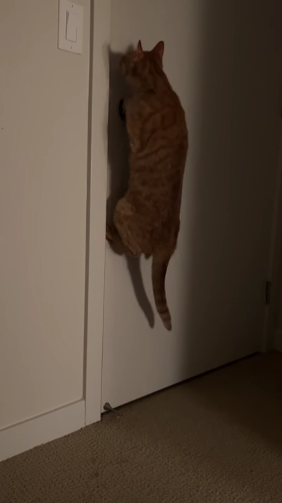

The cat (Felis catus), also referred to as the domestic cat or house cat, is a small domesticated carnivorous mammal. It is the only domesticated species of the family Felidae. Advances in archaeology and genetics have shown that the domestication of the cat occurred in the Near East around 7500 BC. It is commonly kept as a pet and farm cat, but also ranges freely as a feral cat avoiding human contact. It is valued by humans for companionship and its ability to kill vermin. Its retractable claws are adapted to killing small prey species such as mice and rats. It has a strong, flexible body, quick reflexes, and sharp teeth, and its night vision and sense of smell are well developed. It is a social species, but a solitary hunter and a crepuscular predator.
Cat intelligence is evident in their ability to adapt, learn through observation, and solve problems, with research showing they possess strong memories, exhibit neuroplasticity, and display cognitive skills comparable to a young child. Cat communication includes meowing, purring, trilling, hissing, growling, grunting, and body language. It can hear sounds too faint or too high in frequency for human ears, such as those made by small mammals. It secretes and perceives pheromones.

The domestic cat originated from Near-Eastern and Egyptian populations of the African wildcat, Felis silvestris lybica. The family Felidae, to which all living feline species belong, is theorized to have arisen about 12 to 13 million years ago and is divided into eight major phylogenetic lineages. The Felis lineage in particular is the lineage to which the domestic cat belongs. Several investigations have shown that all domestic varieties of cats come from a single species.
More information
Cats are carnivores that have highly specialized teeth. There are four types of permanent teeth that structure the mouth: twelve incisors, four canines, ten premolars and four molars. The premolar and first molar are located on each side of the mouth that together are called the carnassial pair. The carnassial pair specialize in cutting food and are parallel to the jaw. The incisors located in the front section of the lower and upper mouth are small, narrow, and have a single root.
More information
Cat senses are adaptations that allow cats to be highly efficient predators. Cats are good at detecting movement in low light, have an acute sense of hearing and smell, and their sense of touch is enhanced by long whiskers that protrude from their heads and bodies. These senses evolved to allow cats to hunt effectively at dawn and dusk. Cats have a tapetum lucidum, which is a reflective layer behind the retina that sends light that passes through the retina back into the eye.
More information
Cat intelligence refers to a cat’s ability to solve problems, adapt to its environment, learn new behaviors, and communicate its needs. Structurally, a cat’s brain shares similarities with the human brain,[1] containing around 250 million neurons in the cerebral cortex, which is responsible for complex processing. Cats display neuroplasticity, allowing their brains to reorganize based on experiences. They have well-developed memory retaining information for a decade or longer.
More information